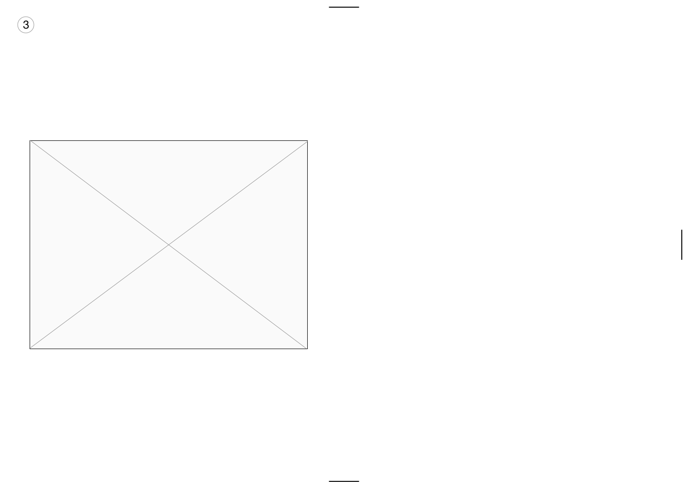

Wireframe
WIREFRAME [SKETCH]
This is the introduction page. When image in the center is clicked, it is linked to the page below:
<
Four sections of the page are divided into the top, bottom, left, and right parts.
Second iteration. Hovering over the (possibly green) color tinted image will show the contents.
When a section of a page is entered, menu bar will appear hidden the on the left side of the page; when hovered over, contents will reappear:

Another iteration of a main page. Gif collection of music video previews will be shown on image box on the left
When song title is hovered over, preview of video appears on the right. When song title is clicked on, full video will show from the start.
Mobile wireframe